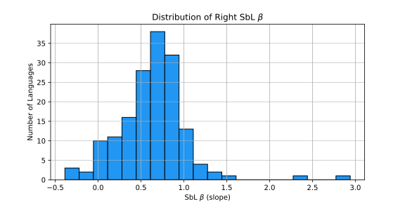
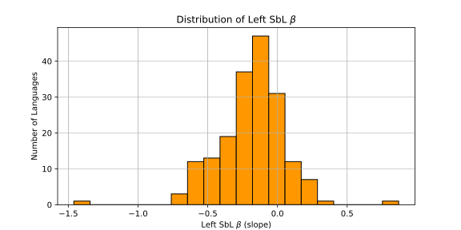
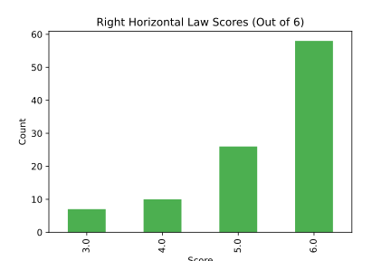
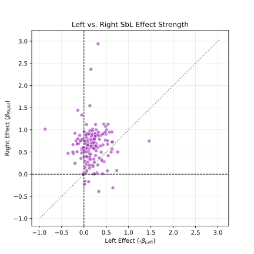

This page visualizes the global compliance across the 180 languages for the Standard Helix tables.
These histograms show the distribution of the regression slope (SbL $\beta$) for both the Right and Left sides. For the Right side, a positive value indicates the expected Short-Before-Long effect (inner dependents are shorter). For the Left side, "Short-Before-Long" implies that dependents further from the verb (which occur earlier) are shorter than those closer to the verb. Thus, a negative slope ($\beta$) indicates compliance with the Short-Before-Long effect. On this site, Left slopes are negated in comparative visualizations so that a positive value (Green) consistently means compliant.


This chart shows how many languages achieve perfect compliance (6/6) or partial compliance to the strict Horizontal Law ($R_n^k < R_n^{k+1}$).

This scatter plot visualizes whether the Short-Before-Long principle is applied symmetrically. The Left SbL slope is negated so that for both axes, a positive value means compliance with the SbL principle. The diagonal dotted line represents perfect symmetry.
